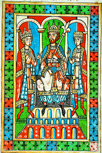
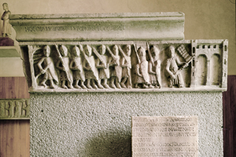
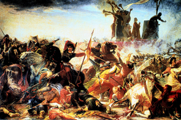

Lezione 7  Sacro romano impero
Sacro romano impero

-
-10
345
-
80
360
-
80
330
-
120
400
-
120
370
-
70
410
-
50
380
-
110
300

SVEVIA
Federico Barbarossa in trono circondato dai figli Enrico e Federico in una miniatura tedesca del 1180 circa. È il primo imperatore della casa di Svevia.
MILANO
In questo bassorilievo di età romanica sono raffigurati i cittadini di Milano che rientrano nella città dopo la sconfitta di Federico Barbarossa. 1162: Distruzione Milano da parte di Federico I Barbarossa.
LEGNANO
1176: A Legnano la Lega Lombarda sconfigge l’imperatore Federico I Barbarossa, che riconosce ai Comuni il diritto di auto-governarsi. Con la Pace di Costanza del 1183 i comuni ottengono i “diritti regali”, conquistano l’autonomia politica. La Pace di Costanza conclude la lunga lotta tra l’Impero e i Comuni.
Durante il Risorgimento la lotta dei comuni italiani contro il Barbarossa viene celebrata da poeti e pittori come simbolo delle idee unitarie e patriottiche, come si vede in questo dipinto del 1859 del pittore Amos Cassioli.BOLOGNA
XI secolo: A Bologna nasce la prima università d’Europa. Si torna a studiare la tradizione giuridica di Roma, e con essa la distinzione tra la sfera pubblica e quella privata.RONCAGLIA
1154: Nella Dieta di Roncaglia l’imperatore condanna Milano alla distruzione.VENETO
Nel 1164 il Veneto dà vita a una Lega di Comuni per difendersi dagli attacchi del potere imperiale.PONTIDA
Dall’ampliamento della Lega veneta le città della pianura padana costituiscono nel 1167 a Pontida la Lega Lombarda. Vi aderisce anche la Chiesa.ALESSANDRIA
Fondazione di Alessandria, in onore di papa Alessandro III, per contrastare il marchese del Monferrato, alleato dell’Impero.